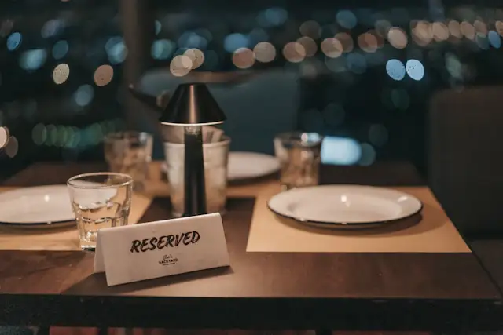
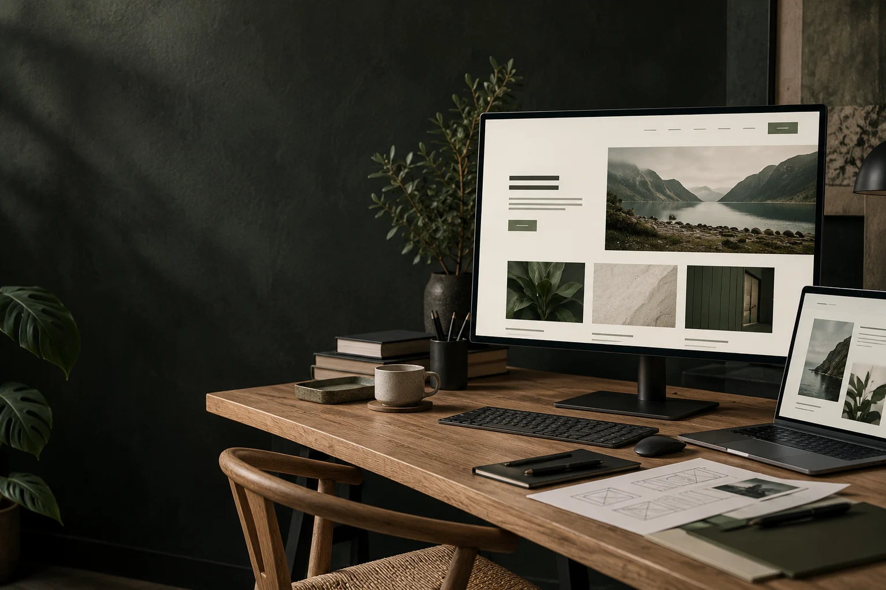
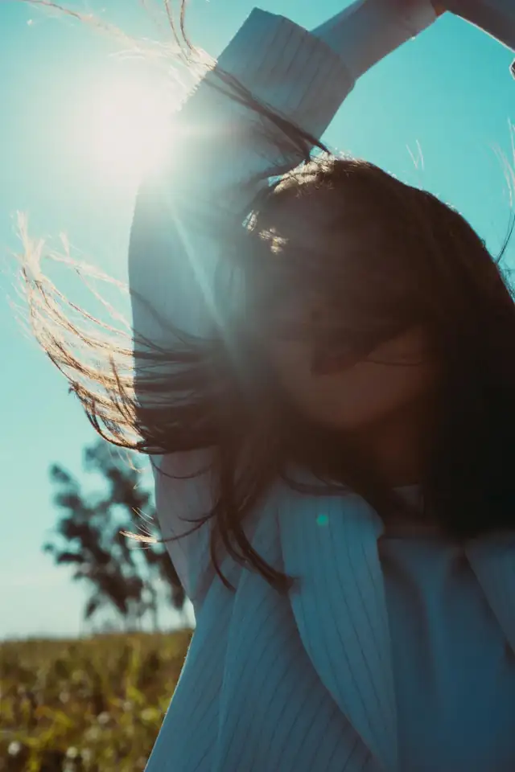
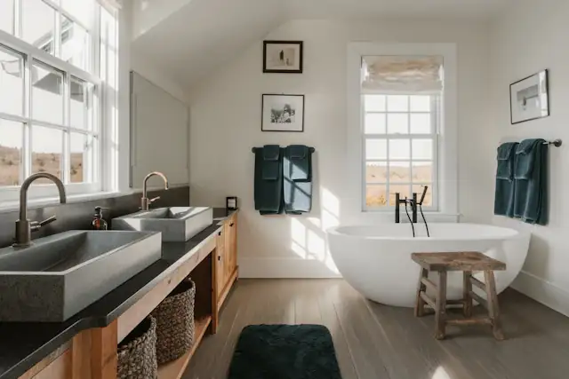
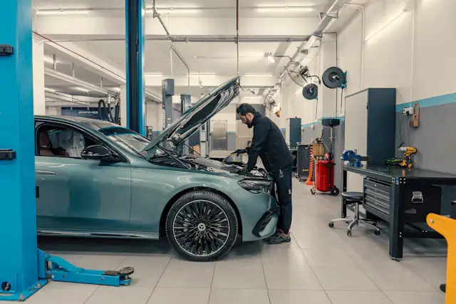

01 / Atmosfære
Før du har
tatt plass.
Et varmt første møte. Bilde, meny og typografi setter stemningen allerede før besøket.
Opplev Bord & Jord ↗

Nettsider med egenart.
Et gjennomført digitalt førsteinntrykk,
skapt for bedriften din.
Et uttrykk som kjennes som deg.
Fra stemningen rundt et bord til rommet du vil kalle hjemme. Vi former nettsiden rundt bedriften — ikke omvendt.
Se alle nettsidene ↘01 / Atmosfære
Et varmt første møte. Bilde, meny og typografi setter stemningen allerede før besøket.
Opplev Bord & Jord ↗
02 / Perspektiv
Store bilder. Rene linjer. En arkitektonisk presentasjon som gir både boligen og detaljene plass.
Utforsk ROM eiendom ↗
03 / Personlighet
Et redaksjonelt uttrykk med håret i hovedrollen. Behandlingene er like enkle å finne som bildene er å huske.
Bli kjent med FORM ↗
04 / Hele veien med
Fra store flater til hånden din. Bilder, tekst og navigasjon finner sin plass — også på mobil.
Prøv nettsiden selv ↗Seks bransjer / seks egne uttrykk
Åpne nettsidene. Utforsk innholdet.
Se hva som kan passe bedriften din.


Fiktive virksomheter og designforslag — ikke leverte kundeprosjekter. Fotografiene er illustrasjoner.
En nettside. Ditt utgangspunkt.
Nettsiden er et engangskjøp. Du velger selv hva du trenger videre.
Et eget uttrykk, en tydelig struktur og sider som fungerer på mobil og stor skjerm. Innhold, omfang og pris avtales før vi begynner.
Hjelp til å holde nettsiden oppdatert etter lansering. Omfang og oppfølging avklares i en egen avtale.
Relevant innhold og en forståelig struktur. Ingen lovnader om bestemte plasseringer. Arbeidet avtales separat.
Mål, kanaler og måling starter med en samtale. Booking-, annonse- og analyseintegrasjoner er ikke koblet til i disse demoene.
Fra første tanke til ferdig nettside.
Vi avklarer hvem du vil nå, hva siden skal gjøre og hvilke rammer vi har.
Du får et konkret design å ta stilling til. Uttrykk og innhold utvikles sammen.
Vi gjennomgår sider og funksjoner før lansering. Videre hjelp avtales separat.
Neste kapittel.
Et uttrykk du liker, er et godt sted å begynne.
Kontaktkanalen er ikke åpnet på denne siden ennå. Ingen henvendelse kan sendes her.
Tilbake til eksemplene ↗